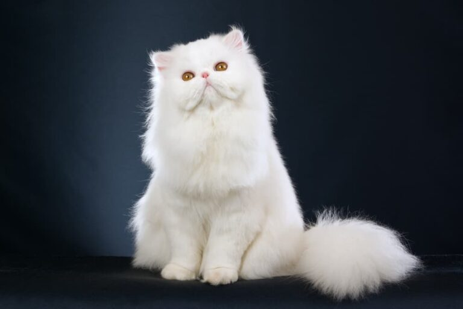

DOG
A dog has a strong power of smell. They are more liked by people because
of
their faithfulness. They are intelligent, they are watchfulness. The dogs have many colors such as
grey,
white, black, brown and red. They are of many kinds such as bloodhound, greyhound, german shepherd,
Labrador, Rottweiler, bulldog poodle, etc.1.

CAT
Cats are domesticated animals. ‘Felis catus’ is its scientific term. It is
a
little animal from the "Felidae" family. The cat is the only member of this family that has
undergone
domestication. This family of animals also comprises tigers, panthers, and other animals.
Domesticated
cats are popularly loved because of their cuteness and playful nature. Playing with them makes you
feel
less stressed and anxious.2.

RABBIT
Rabbits are cute and furry little animals that all kids love and are
common as pets in houses and farms. Fairly tales and moral stories also frequently feature rabbits
as significant characters as everyone loves them. Children are thus familiar with these adorable
animals and will have several ideas and thoughts to express. When teachers assign them an essay
writing topic on rabbits, they may need a little help as this essay will require a few facts apart
from their personal views. Let us help your child write an essay for classes 1, 2 and 3 on these
little furry animals..3.

MONKEY
Monkeys are found sitting on trees, forests, mountains, green fields and
roofs
of houses. It is a family organism that lives in a herd. The diet of the monkey includes walnuts,
berries, and fruits. Its favorite fruit is bananas.4.